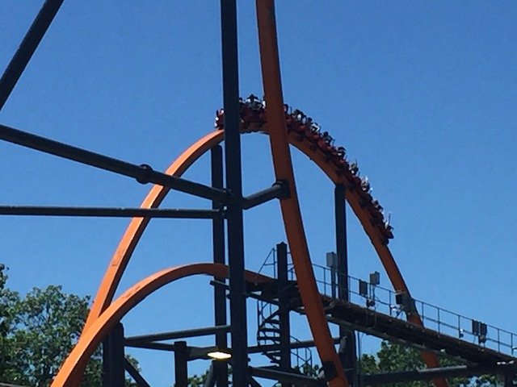
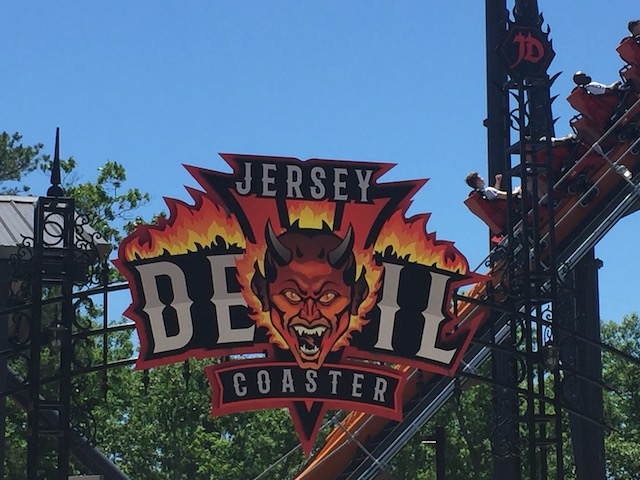

| |
Jersey Devil Review

Today at Incrediblecoasters, we're going to be reviewing Jersey Devil. Now this is one of the newer models of RMCs. It's a different layout from the original version. But this one is starting to catch on as well. But for now, let's get in the cars. We pull down the restraints (these resteraints are weird. They feel more like a figher pilot seatbelt), and we're off. We begin to climb the lifthill. Not a whole lot to see aside from trees. Though it is possible to get a nice view of not only the ride we're climbing the lifthill for, but also Nitro since that ride is also a bit out of the way. Eventually however, we reach the top. We crest the lifthill and head down the first drop. Not the best first drop, but it's a fun drop, giving us some nice speed. Plus, it's nearly vertical. Not quite, but still really steep. We then head into a Dive Loop. It's not quite as graceful as the Dive Loops you find on the standard B&Ms, but it's still a lot of fun. Sadly, there's not a lot of whip on this version. Which is kind of surprising given not only the amount of whip on Railblazer, but even its (near) clone, Wonder Woman has some whip here. And some ejector air on the first drop. But that's missing here. We then head over an airtime hill. It's not great here, but there's a nice little pop. And believe it or not, that's not just me being spoiled by the fact that El Toro is in the same park as this. Once again, it's stronger on Wonder Woman. We then head through a Zero-G Roll. However, it's not quite that. Mainly because here....you come out in the same direction you came in. So you reverse and come back out in the opposite direction instead of fully flipping. And yeah. That gives a nice little bit of laterals. A big fan of that element. We then head up a curved hill and around a tight turn. OK. There's some decent laterals here. Fun ride, but nothing insane. We drop back down, getting a lot of speed. We then head straight into a Zero G Roll. And this one is a normal one. And while I wouldn't call it forceless. You can definately feel the laterals going through it. But at the same time, it doesn't have a ton of whip. It's got enough whip to be satisfactory as a Zero G Roll. However, when compared to the really strong B&Ms, and especially Wonder Woman, this is a let down when you know what to compare it to. We then head up a hill, get a nice pop of ejector air, and go right into the midcourse brakes. Sadly, this cuts down a bit on the speed. We then drop back down and get a decent amount of our speed back. We then head through a low to the ground turn that gives us a little bit of whip. Just not enough as we would hope for. We then head right over a banked airtime hill. Ooh. Banked Airtime. That's always fun and an RMC staple. And of course, we go through another banked airtime hill. WEE!!! SIDEWAYS AIRTIME!!! OK, not sideways airtime. But banked airtime at the very least. OK. The last airtime normal and straight. But it's still fun. Hop over the hill. Wee! Airtime! Hop up another banked hill. Curve out and right into the brake run. Honestly, Jersey Devil really let me down. I know it's hard to really give this a true proper ranking since I only got one ride on it. Maybe the ride I got on it was a bit more slow and sluggish and that it normally runs a lot better. But A: Friends who are local to Six Flags Great Adventure vouch that my ride was the norm, rather than the exception. B: It's really clear that this ride could be so much better. It's mind-blowing how much better Wonder Woman is despite nearly being clones. However, if you ignore what you want the ride to be and instead focus on how it actually is, then Jersey Devil is a really fun ride. It still has some whip and some airtime. And it's better than so many coasters out there. I mean, there are no bad RMCs. And even the worst RMC is better than most coasters. True, being at Six Flags Great Adventure, teh competiton is really feirce since....El Toro is here. And even outside El Toro, there are a lot of other solid coasters here. So yeah. I'd definately give this a ride. ESPECIALLY if you haven't been on an RMC Raptor. It may not be the best or the most intense, but it is a solid and fun ride at the end of the day.
8/10
Location: Six Flags Great Adventure
Opened: 2021
Built by: Rocky Mountain Coasters
Last Ridden: June 17, 2021
I have ridden this exact same ride at the following parks.
Six Flags Magic Mountain
Jersey Devil Photos







Home
|